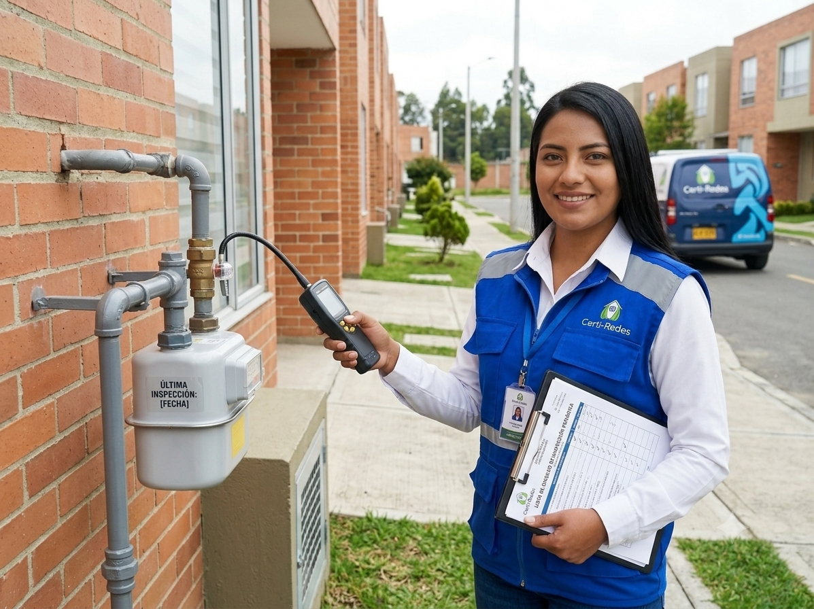
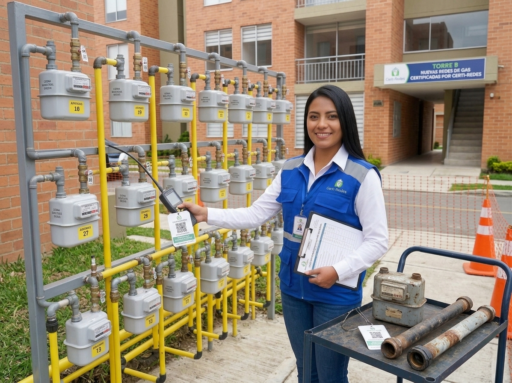
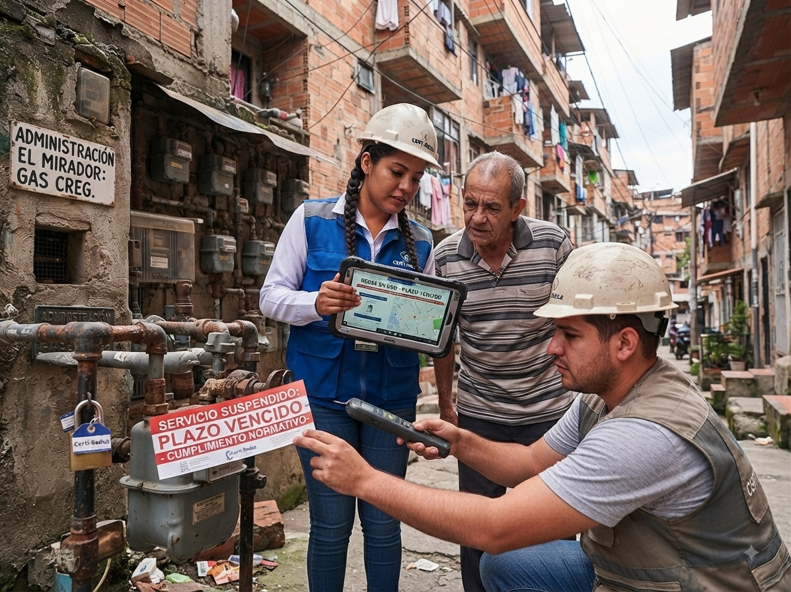

Revisión periódica

La revisión periódica es un procedimiento obligatorio que deben realizar
todas las instalaciones de gas natural después de un determinado tiempo
de uso. Su finalidad es garantizar que el sistema funciona correctamente
y no representa ningún riesgo para los ocupantes del inmueble.
Este servicio aplica tanto para viviendas como para establecimientos
comerciales que utilicen gas natural en sus actividades diarias.
¿A quién aplica?
- Propietarios de viviendas
- Arrendatarios
- Locales comerciales
- Edificios residenciales
¿Qué incluye la revisión?
- Inspección de tuberías y conexiones
- Detección de fugas con equipos especializados
- Verificación de ventilación
- Evaluación de artefactos a gas
¿Qué pasa si no se realiza?
No cumplir con esta revisión puede generar riesgos como fugas,
accidentes domésticos, sanciones legales o incluso la suspensión
del servicio por parte de la empresa distribuidora.
Proceso del servicio
- Agendamiento de la visita técnica
- Inspección en el lugar
- Entrega de resultados
- Recomendaciones o correcciones necesarias
Inspección de redes nuevas o reformadas

Este servicio está dirigido a instalaciones de gas que han sido
construidas recientemente o que han sufrido modificaciones en su
estructura. Antes de ser utilizadas, deben pasar por una inspección
técnica que garantice su correcto funcionamiento.
Es un requisito fundamental para poder activar el servicio de gas
de manera legal y segura.
¿A quién aplica?
- Viviendas nuevas
- Inmuebles remodelados
- Locales comerciales en adecuación
- Constructores y contratistas
¿Qué verificamos?
- Instalación correcta de tuberías
- Hermeticidad del sistema
- Cumplimiento de normas técnicas
- Condiciones de seguridad
¿Qué pasa si no se realiza?
La instalación no podrá ser habilitada, lo que impide el suministro
de gas. Además, puede representar un riesgo si se utiliza sin
certificación.
Proceso del servicio
- Solicitud de inspección
- Revisión técnica completa
- Validación de cumplimiento normativo
- Emisión de certificación
Redes sin vínculo contractual
Este servicio aplica a instalaciones de gas que no cuentan con un
contrato activo con una empresa distribuidora. En estos casos, es
necesario realizar una evaluación completa para determinar si la
red cumple con los requisitos para su legalización.
Es común en inmuebles antiguos o que han estado fuera de uso por
largos periodos.
¿A quién aplica?
- Propietarios de inmuebles antiguos
- Viviendas desocupadas por largo tiempo
- Locales sin servicio activo
¿Qué incluye?
- Evaluación completa de la instalación
- Detección de fallas o riesgos
- Recomendaciones de adecuación
- Preparación para certificación
¿Qué pasa si no se realiza?
La instalación no podrá ser utilizada legalmente y puede representar
un peligro si se intenta activar sin revisión técnica previa.
Proceso del servicio
- Diagnóstico inicial
- Inspección detallada
- Informe técnico
- Adecuaciones si son necesarias
Redes en uso con plazo vencido

Este servicio está enfocado en instalaciones de gas que ya han
superado el tiempo permitido sin realizar su revisión obligatoria.
Es necesario actualizarlas para garantizar que siguen siendo seguras.
Muchas veces los usuarios desconocen este vencimiento hasta que
reciben una notificación o presentan fallas en el servicio.
¿A quién aplica?
- Usuarios con revisión vencida
- Propietarios de viviendas en uso
- Negocios con instalaciones antiguas
¿Qué incluye?
- Inspección del estado actual
- Detección de fugas o fallas
- Corrección de problemas encontrados
- Preparación para renovación del certificado
¿Qué pasa si no se realiza?
Puede generar suspensión del servicio, sanciones o riesgos para
la seguridad de los ocupantes del inmueble.
Proceso del servicio
- Agendamiento
- Revisión técnica
- Correcciones necesarias
- Renovación del certificado